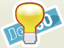

Tüm tarayıcılarda sorunsuz çalışan, esnek bir web sayfası oluşturmak için Tablosuz Tasarım yapmalısınız!
Tarayıcu Uyumluluğu
Tablosuz tasarım ile tarayıcılara ayak uydurun...
Hızlı Tasarım
Tablosuz tasarım ile vaktiniz size kalsın...

Esnek Sayfa Yapısı
Tablosuz tasarım ile sayfa kontrollerini ele geçirin...
CSS Nedir?
Cascading Style Sheets (Basamaklı Stil Şablonları ya da Basamaklı Biçem Sayfaları, bilinen kısa adıyla CSS), HTML'e ek olarak metin ve format biçimlendirme alanında fazladan olanaklar sunan bir Web teknolojisidir.
İnternet sayfaları için genelgeçer şablonlar hazırlama olanağı verdiği gibi, bağımsız olarak harflerin stilini, yani renk, yazı tipi, büyüklük gibi özelliklerini değiştirmek için de kullanılabilir. Bu tekniğin en önemli özelliği kullanımındaki esnekliktir.
Bir Web sayfası içerisinde birbiriyle uyumlu birkaç renk ve birkaç yazı tip kullanılır ve bunları her sayfada ayrı ayrı tekrar belirtmek yerine CSS yardımıyla bir sefer tanımlayıp bütün Web sayfalarında ortak olarak kullanılabilir. Böylece sayfaların hafızadaki boyutu epey küçüldüğü gibi güncelleme yapmak da kolaylaşır.
CSS kodları, HTML kodlarının içine yazılabildiği gibi harici bir CSS dosyası oluşturularak da işlem yaptırılabilir. Türüne göre <BODY> veya <HEAD> bölümlerinde yer alabilirler. Ayrıca <link rel="stylesheet" type="text/css" href="style.css" /> koduyla CSS dosyası çalışma sayfasına eklenebilir. Onları ayrı dosyada veya dosyalarda saklamak, onları değişik HTML sayfalarınca kullanılmasını sağlar, aynı sayfanın değişik aygıtlara göre formatlandırılmasını kolaylaştırır, sunumla yapıyı ayırarak değişiklik yapılmasını ekonomikleştirir.